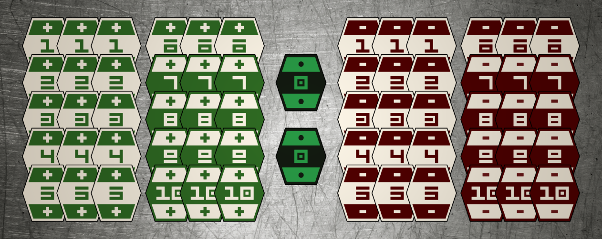
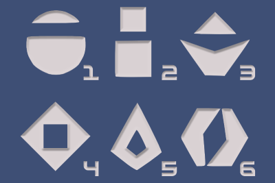

Resources
Overview
This guide will walk you through everything that you will need to play Corellian Spike,
with resources for official products, unofficial replicas, and DIY instructions:
Once you've got everything you need, you can move on to learning
the Rules.
The Deck
There are 62 cards in a deck of Corellian Spike.
There are 30 positive and 30 negative cards, and 2 cards (called Sylops) that are worth 0.
A typical deck might look like this:

A complete deck has three sets of 1 through 10, positive and negative.
It also has two 0 cards, known as Sylops.
Deck Resources
-
Official Decks
-
"Sabacc" from Galaxy's Edge at Disney parks:
The included rules come close to matching those
used in Solo, but lack gambling mechanics. You may be able to find one for a decent
price on eBay.
-
"Han Solo Card Game" by Hasbro:
These cards have the "Star Wars" logo on the back, and the rules
don't quite match up to those used in the film. We have usually seen it available for
not more than $15 (USD).
-
Unofficial Replica Decks
-
High-quality replica by Lucky Sylop on Etsy:
The cards look incredibly accurate, however they are only textured on one side, meaning they have a tendency to slide more than
other cards do.
-
DIY Decks
-
Printable deck PDF by La Tribune de Coruscant:
Make sure your printer can print front-and-back, and that you have enough ink.
-
Sabacc Playing-Card Mod by AurekFonts:
Guide for how to construct a Corellian Spike deck using normal playing cards.
The Spike Dice
Corellian Spike uses two 6-sided dice (2d6) known as the "Spike Dice."
On screen, the dice have alien markings rather than pips. For the sake of playing Corellian Spike however, the dice
only matter when doubles are rolled, so understanding their meaning is not actually important. Nonetheless,
this is our best guess for the numerical representations of the Spike Dice:

Spike Dice Resources
-
Official Spike Dice
-
Official spike dice are not sold on their own, but come with both official decks listed above in the "Deck Resources."
-
Unofficial Replica Spike Dice
-
DIY Spike dice
-
Any pair of normal 6-sided dice (2d6) will work.
Credits (Gambling Chips)
{ This guide is still under construction. Please check back later. }
The Rules
Once you've got everything you need, you can move on to learning the Rules.